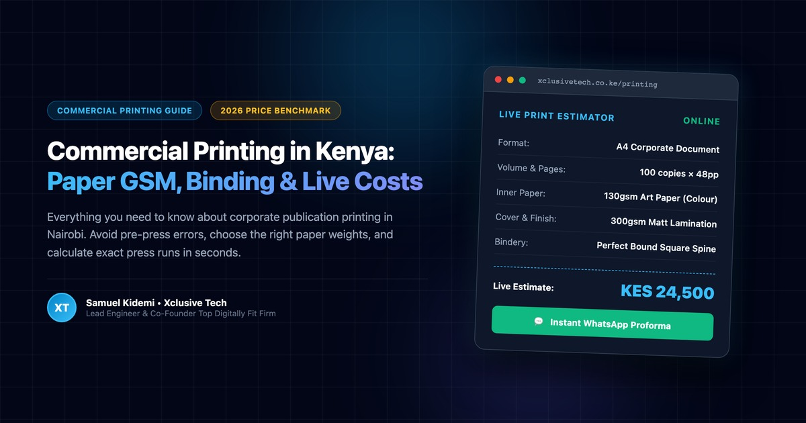

Executive Summary & Key Takeaways
- Short Runs (<250 copies): Always utilize high-fidelity digital presses. Aluminum CTP plate setup costs make offset economically unjustifiable for small quantities.
- High-Volume Runs (500+ copies): Industrial offset presses deliver significant per-copy savings—often reducing unit costs by 60% compared to digital.
- Paper GSM Choice: Use 80gsm Bond for everyday text manuals; 130gsm Art Paper (Silk) for corporate annual reports; and 300–350gsm with matt lamination for sturdy covers.
- Spine Bindery Rules: Saddle stitch is restricted to 48 pages or fewer. Beyond 48 pages, perfect binding with PUR adhesive is mandatory to prevent spine cracking.
- Transparent Estimation: You can calculate exact line-item costs live in KES using our Interactive Commercial Printing Calculator.
1. The State of Commercial Printing in Kenya
Every business leader in Kenya has experienced the classic Nairobi print frustration: walking through the crowded printing corridors of River Road, Kirinyaga Road, or Industrial Area, receiving four completely wild price quotes from different brokers, and eventually receiving a delivery where the brand colors look washed out, the paper feels flimsy, and the book spine splits after two reads.
Commercial printing is not a guessing game. It is a precise manufacturing science governed by raw paper substrate weight (GSM), press calibration (CMYK 300 DPI), plate chemistry, and mechanical bindery tensile strength.
At Xclusive Tech, operating in Kilimani, Nairobi, we bridged this gap by developing Kenya's first fully transparent, live-calculating digital & offset printing platform at xclusivetech.co.ke/printing.
2. Demystifying Paper Weights: What Does GSM Actually Mean?
GSM stands for Grams per Square Meter. It represents the physical weight and density of a 1m × 1m sheet of paper. The higher the GSM, the thicker, sturdier, and more opaque the paper substrate.
| Paper Weight | Category | Best Kenyan Corporate Use Cases |
|---|---|---|
| 70 – 80 gsm | Uncoated Bond | Office letterheads, legal contracts, black-and-white training manuals, novel text blocks. |
| 115 – 130 gsm | Art Paper (Silk / Gloss) | Executive annual reports, company profiles, full-color product catalogs, institutional magazines. |
| 150 – 170 gsm | Heavyweight Art Paper | Luxury brand lookbooks, museum catalogs, tri-fold brochures, high-end promotional flyers. |
| 250 – 300 gsm | Cover Art Card | Outer covers for annual reports, books, brochures, conference credentials, packaging sleeves. |
| 350 gsm+ | Rigid Heavy Art Card | Executive business cards, presentation folders with card slots, luxury invitations. |
3. The 4 Machine Binding Methods: How to Avoid Books Falling Apart
A book's binding determines its functional durability, aesthetic prestige, and cost. Here is how to choose between the four major bindery methods in Kenya:
Saddle Stitch (Stapled)
Pages are folded in half and stapled through the center fold with two heavy-duty wire staples.
- Page range: 8 to 48 pages (multiples of 4).
- Best for: Short booklets, event programs, company profiles.
- Limitation: Exceeding 56 pages causes the booklet to "flare" and pop open.
Perfect Binding (Glued Square Spine)
Pages are stacked, spine edges are micro-milled to expose paper fibers, and hot-melt Polyurethane Reactive (PUR) glue bonds them into a wrap-around cover.
- Page range: 48 to 400+ pages.
- Best for: Novels, annual reports, policy manuals, catalogs.
- Benefit: Creates a clean square spine for printed book titles.
Wire-O 360° Metal Binding
Punched hole spine threaded with double-loop twin-wire metal rings. Allows complete 360-degree flat rotation.
- Page range: 16 to 250 pages.
- Best for: Training workbooks, culinary recipe books, technical SOPs.
- Benefit: Lays 100% flat on desks during training and meetings.
Deluxe Case Hardcover
Inner text block is encased between 2.5mm heavy greyboard, wrapped in laminated printed art card with silk ribbon markers and headbands.
- Page range: 64 to 600+ pages.
- Best for: Institutional memoirs, corporate anniversary books.
- Benefit: Decades of archival preservation and executive prestige.
4. The 5 Costliest Pre-Press Mistakes Kenyan Businesses Make
Over 80% of printing disasters happen before the press even starts rolling. Here are the five most common errors our pre-press desk catches:
Computer screens display colors in Red, Green, Blue light. Commercial presses use Cyan, Magenta, Yellow, and Key Black ink. Submitting RGB files causes neon blues and vibrant greens to turn muddy and dark when printed.
If your background artwork stops exactly at the page edge, mechanical guillotine shift (even by 0.5mm) will leave ugly white slivers along your publication margins. Always extend artwork 3mm beyond the trim line.
Images copied from websites are saved at 72 DPI (dots per inch). Commercial presses require 300 DPI at actual print scale. Printing 72 DPI results in blurry, pixelated logos and photos.
If your designer used custom brand typography and did not outline fonts or embed them into the PDF, the printing press RIP software will substitute missing fonts with Arial or Courier, completely destroying your layout.
For perfect bound books, the spine width is directly dependent on page count and paper GSM. Forcing artwork without exact caliper spine measurement causes the title text to wrap awkwardly onto the front cover.
Calculate Your Exact Print Run in Seconds
Rather than waiting 48 hours for ambiguous email quotes, our interactive commercial print calculator allows procurement officers, authors, and marketing managers to test formats, paper weights, volumes, and delivery zones live in Kenyan Shillings.
Instant Real KES Pricing
Unit prices and total investments update on every slider toggle without page reloads.
Total Weight Calculations
Calculates physical batch weight in kilograms for easy shipping and handling logistics.
1-Tap WhatsApp Quotes
Formats complete specifications into an official quotation message for instant sign-off.
Frequently Asked Questions on Commercial Printing in Kenya
How long does a commercial print run take in Nairobi?
Standard production takes 5 to 7 business days to ensure controlled drying, lamination bonding, and precise bindery trimming. For urgent board meetings or conferences, we offer Express Priority (3 to 4 days) and Emergency 48-Hour Rush options.
Do you deliver outside Nairobi?
Yes. We deliver across all 47 counties in Kenya. Publications are bundled in moisture-resistant shrink-wrap and packaged inside 5-ply cartons dispatched through Wells Fargo, Fargo Courier, and G4S to Mombasa, Kisumu, Nakuru, Eldoret, Nyeri, and regional centers.
What payment terms apply to printing orders?
Standard terms are a 50% commitment deposit upon artwork and pre-press proof approval, with the 50% balance payable upon completion and pre-dispatch photographic confirmation. Payments are accepted via Safaricom M-Pesa Buy Goods Till and Bank Wire Transfer.
Ready to Print Your Next Publication?
Whether you have print-ready artwork or need full typesetting and layout design, our print engineering desk is ready to assist.